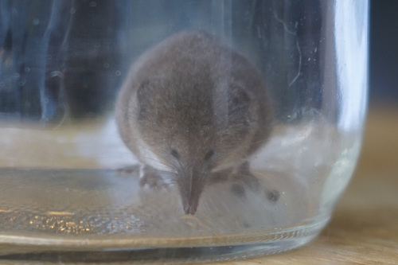
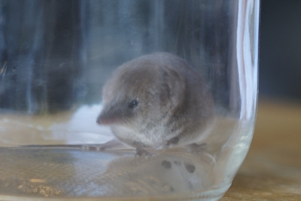
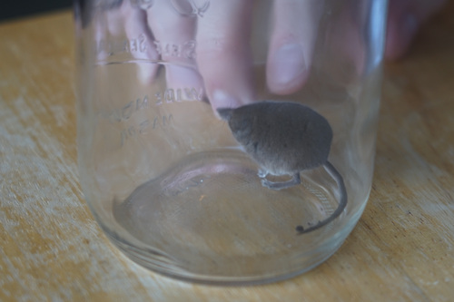
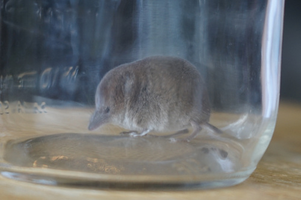
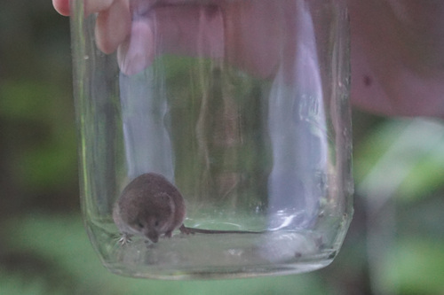

Dreams do come true!!! Ryan's dad found a shrew in the garage and we worked together to catch this tiny guy. He was misidentified as a vole and was getting evicted. I was holding the jar he ran into btw!!
 He was SUPER CUTE!!!! He was about the size of my thumb. How did he get so tiny...
 I took some photos of him in the jar and then we took him out to the woods to his new home. During the walk, he puked and then ate his puke. Sorry for the trauma, buddy...
Both Ryan and I touched his fur before we let him loose. He was so soft~ What a blessed creature!
While writing this, I found out this was a shrew and not a vole! Shrews don't dig holes in your lawn, but do eat the bugs in your garden. They are welcome here from now on.